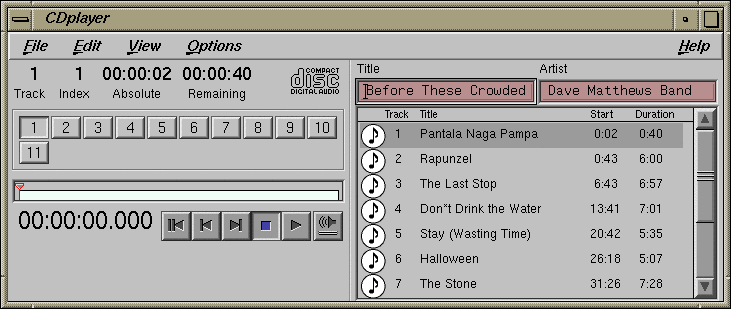
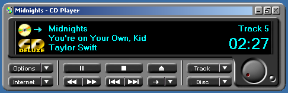

CD Info Gateway
CD Info Gateway
freedb.org announced its services would shutdown entirely on 2020-03-31. Many legacy software applications have FreeDB/CDDB support built-in for fetching CD metadata such as artist, title, and track names. To keep these apps functioning in their fully glory, this is meant as a drop-in replacement for FreeDB/CDDB.
This application does not use the original CDDB database, but fetches disc information from MusicBrainz which has an open API and excellent up-to-date disc metadata.
Usage
HTTP Access
| Hostname | cddb.retrobridge.org |
| Ports | 80, 8880 |
| Path | /~cddb/cddb.cgi |
Full URLs for access over HTTP
http://cddb.retrobridge.org:80/~cddb/cddb.cgihttp://cddb.retrobridge.org:8880/~cddb/cddb.cgi
CDDBP Access
| Hostname | cddb.retrobridge.org |
| Port | 888 |
Tested Applications
SGI CDplayer, IRIX 6.5.30
Working!
The IRIX CDplayer lets you set the CDDB server host and port.
It has the /~cddb/cddb.cgi path hardcoded in the application.
It does not send the HTTP host header, so virtual hosts will
not work with this CD player.

Windows 2000 CD Player
Working!
The CD player in Windows 2000 doesn't use CDDB, but it follows a similar approach of sending disc data over HTTP to get a track listing response. A catch is that the player requires a "certificate" value in the response. This appears to be static per provider and changing any aspect of the provider configuration in the registry breaks it. It must be a hash of the provider config.
Thanks to cached responses on archive.org, we know what "certificate" to send for the Tunes.com provider. All you have to do is add a HOSTS file entry to point www.tunes.com at the IP of this website.
Start > Run and
notepad %systemroot%\system32\drivers\etc\hosts.
Add this entry, save, and it should start working right away.
188.166.117.156 www.tunes.com

cdrdao v1.2.4
Working!
This is a CLI app for Linux. It lets you use HTTP, CDDBP, set hosts, ports, paths, everything you need. So it's easy to get going.
Via HTTP
cdrdao read-cddb --cddb-servers cddb.retrobridge.org:8880:/~cddb/cddb.cgi -v 3 disc.toc
Via CDDBP
cdrdao read-cddb --cddb-servers cddb.retrobridge.org:888 -v 3 disc.toc
Exact Audio Copy 0.99
Working!
Lets you set the full HTTP URL so it's easy to configure.
- EAC > freeDB / Database Options
VLC 1.1.9
Not working. This doesn't seem to ever fetch metadata, even from the live FreeDB servers.
This was the last version to work on Windows 2000.
- Tools > Preferences
- Under Show settings select All.
- Input / Codecs > Access modules > Audio CD